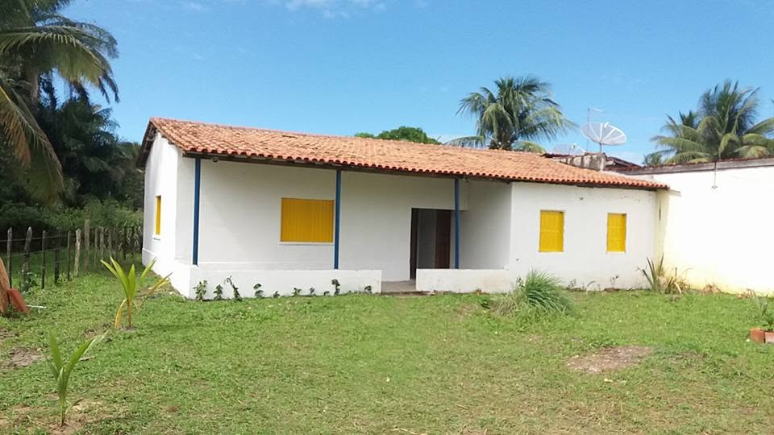

A Associação de Moradores do Sargi e Pé de Serra reúne moradores e proprietários das comunidades do Sargi e do Pé de Serra, em Serra Grande, distrito de Uruçuca, na Bahia.
É um grupo formado por representantes dos moradores, formalizado juridicamente em cartório, sem fins econômicos e que luta em prol do bem comum. Uma associação pode representar um bairro inteiro, uma parte dele ou até mesmo uma rua. Em geral, seus líderes são eleitos pelos membros da associação e levam as questões mais urgentes do bairro ao conhecimento do setor público.
Busca, perante os órgãos públicos ou na própria comunidade, melhorias para todos os envolvidos no bairro ou na região. Atua na resolução de problemas estruturais do território — como iluminação pública, criação e manutenção de áreas de lazer, coleta de lixo e saneamento básico. Essas soluções são fundamentais para a qualidade de vida de toda a população que vive no entorno, inclusive as crianças.
Além de melhorar a estrutura do bairro, essas ações promovem a socialização entre os moradores, o que contribui para a construção de um sentimento de comunidade entre todos os envolvidos. Uma comunidade forte e unida pode colaborar muito nesse processo.
“É preciso uma aldeia para criar uma criança.”— ditado africano
O espaço onde a comunidade se reúne, decide e se organiza.

É na sede que acontecem as assembleias e reuniões abertas a todos os moradores. Todas as decisões da associação são tomadas em conjunto, de forma transparente e com condições iguais para todos.